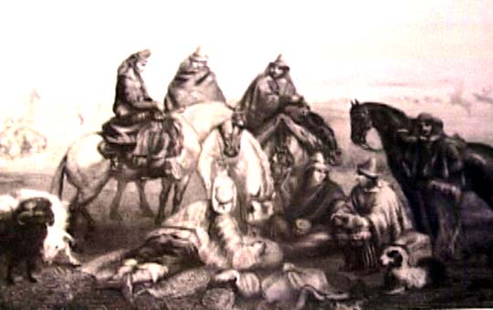

|
|  |
| Claude Gay, Costumes of the people of Chile
|
But then, "the people" themselves, in the emerging Latin American
nation-states of the nineteenth century, were very much an "other",
too. Rotos, gauchos and sertanejos, the inhabitants of the
rural interior, whilst nominally part of the Chilean, Argentinean or
Brazilian citizenry, were simultaneously deemed to be culturally (and
often "racially") backward or "barbarian" subject whom it was the
state's duty to take under its tutelage. In literary and
pictorial works, these peasant populations were often associated with
clichés stemming from the European Orientalist tradition, one of
the oldest and most pervasive iconographies of alterity in the West.

|